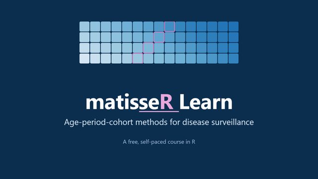
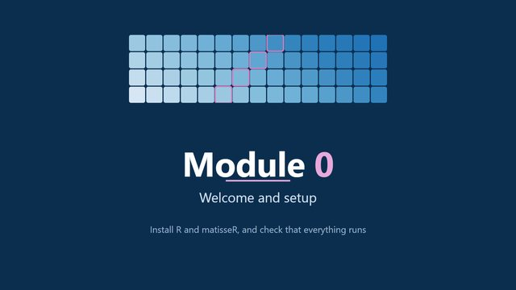
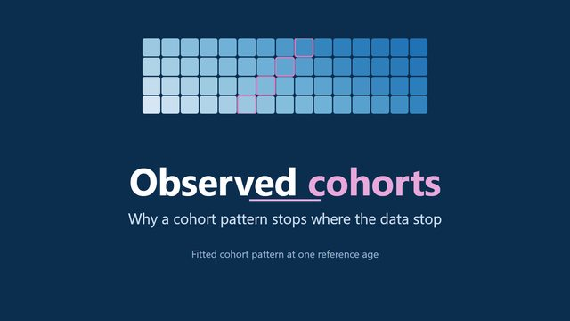
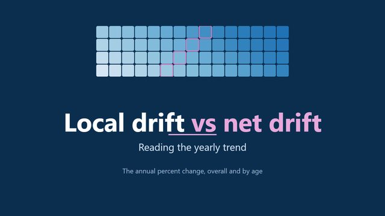

- Install
- Function reference
- Example datasets
- Videos
- Slides and data preparation
- Method papers
- Glossary
- How to cite
Install
Requires R 4.1 or later. matisseR depends only on data.table; the other packages are for plotting.
install.packages(c("data.table", "ggplot2", "patchwork", "scales", "remotes"))
remotes::install_github("filhoalm/matisseR")The package source, issue tracker and README are at github.com/filhoalm/matisseR. Every function has a help page: for example ?apc_fit.
Function reference
The main functions, by the module that teaches them.
| Function | What it does | Module |
|---|---|---|
matisse_example() |
Index and data of the eight synthetic example datasets | 0, 1 |
csv2rates(), rates2csv() |
Read and write the NCI Age Period Cohort Web Tool CSV format | 1 |
rates_make() |
Build a rates object from a table of cases and person-years | 1 |
rates_long(), rates_uni() |
A table with one row per Lexis cell; a one-line summary | 1 |
rates_chunk() |
Combine ages and periods into larger cells | 1 |
rates_fill() |
Replace zero or missing events with a small positive value | 1 |
rates_i5(), pchip() |
Interpolate 5-year age groups to single years; shape-preserving interpolation | 1 |
lexis_plot() |
Lexis diagram: age by period beside age by cohort | 1 |
apc_design() |
The age-period-cohort design matrix | 2 |
apc_fit() |
Fit the New APC model (weighted least squares or Poisson) | 2 |
apc_ef(), apc_efs() |
One or several estimable functions with 95% confidence limits | 2 |
apc_ref(), apc_scale(), apc_contrast(), apc_ef_vcov() |
Reference cells, scales, contrasts and covariance of an estimable function | 2 |
capricorn() |
Comparative APC analysis: five models, tests and AICc | 3 |
cap_ef() |
Estimable functions and rate ratios by group | 3 |
cap_map(), cap_fit(), cap_blocks() |
Building blocks of the comparative models | 3 |
social_generations(), generation_contrasts() |
Generations, proxy parents and the contrasts between them | 4 |
apc_fcp() |
Fitted cohort pattern at any reference age | 4 |
fcp_generations(), fcp_contrast() |
Mean fitted rate by generation; rate ratios between generations | 4 |
fcp_sum() |
Sum cohort patterns (for example, sites combined) | 4 |
ld_onset() |
Local drifts of early- and late-onset ages | 4 |
pool_rr() |
Random-effects pooling of rate ratios | 4 |
rates_share(), fcp_share() |
A cause as a share of all-cause events; fitted cohort share | 4 |
The generation and share functions go beyond the MATLAB toolbox. See Module 5 for the MATLAB methods that are not yet in R.
Example datasets
Eight synthetic Lexis diagrams: single years of age 35 to 84 by calendar years 1991 to 2019, with Poisson counts drawn from known age-period-cohort surfaces shaped like common cancer patterns. They are not registry data, and they are free to use under the package’s MIT license. In R, call matisse_example(i); here are the CSV files (NCI web tool format) for any other software.
| Dataset | Site | Sex | Population | Cases | Zero cells | True net drift (%/yr) | Design |
|---|---|---|---|---|---|---|---|
| syn01_melanoma_F_A.csv | melanoma | F | A | 16,339 | 0 | 1.86 | main example: rising cohort pattern |
| syn02_melanoma_F_B.csv | melanoma | F | B | 9,905 | 4 | 3.09 | A with a different period trend (vs A: PH-X holds) |
| syn03_melanoma_F_C.csv | melanoma | F | C | 3,203 | 178 | 1.86 | A x 1.3 in a small population, zero cells (vs A: PH-A holds) |
| syn04_melanoma_F_D.csv | melanoma | F | D | 9,674 | 13 | 3.40 | A with a steeper cohort trend (vs A: PH-L holds) |
| syn05_breast_F_A.csv | breast | F | A | 113,679 | 0 | 0.66 | population A: steady cohort increase |
| syn06_lung_F_A.csv | lung | F | A | 34,885 | 9 | 0.32 | population A: cohort peak around 1948 |
| syn07_all_cancers_F_A.csv | all cancers | F | A | 423,369 | 0 | - | population A: examples 1, 5 and 6 plus other cancers (same person-years) |
| syn08_thyroid_M_C.csv | thyroid | M | C | 759 | 877 | 3.56 | small population, mostly zero cells, rising period trend |
Videos
Short videos with synthetic example data, on the matisseR Learn YouTube channel. Click a card to play it here; no data are sent to YouTube until you do.




Slides and data preparation
Course slides, and the steps to prepare registry data for the NCI web tool (which csv2rates() reads directly).
| File | Description | Size |
|---|---|---|
| SEER_CI5plus_to_APC_WebTool.pptx | From SEER*Stat or the CI5 Plus database to the APC input matrix, and the rules the web tool enforces | 1.8 MB |
| Statistical_Methods_in_CSR.pptx | Statistical methods in cancer surveillance research: why these methods are needed | 1.0 MB |
| The_Lexis_Diagram.pptx | The Lexis diagram, its axes, and comparing several diagrams | 3.1 MB |
The NCI Age Period Cohort Analysis Web Tool runs the standard analysis in a browser. Its rules include equal age and period interval widths (5-year ages need 5-year periods) and no zero count or population cells.
Method papers
- Advances in statistical methods for cancer surveillance research: an age-period-cohort perspective (Front Oncol 2024; PDF). The overview of the methods.
- The new age-period-cohort model (Stat Methods Med Res). Module 2.
- Comparative age-period-cohort analysis (BMC Med Res Methodol 2023; PDF). CAPRICORN and EPIPHANY; Module 3.
- Cancer incidence trends in successive social generations in the US (JAMA Netw Open 2024). Generations, proxy parents and SAGE; Module 4.
- Smoothing methods for Lexis diagrams. SIFT; Module 5.
- A web tool for age-period-cohort analysis of cancer incidence and mortality rates (Cancer Epidemiol Biomarkers Prev 2014). The NCI web tool.
Glossary
- Age-period-cohort (APC) analysis
- Statistical analysis of rates that separates the effects of age, calendar period and birth cohort.
- Birth cohort
- People born in the same years. In a Lexis diagram, cohort = period - age.
- CAPRICORN
- Comparative APC analysis: fits several groups together and tests whether their rates are proportional by age, period or cohort.
- Estimable function (EF)
- A curve built from the model that does not depend on how the unidentifiable linear trend is assigned: LAC, CAC, FTT, FCP and local drifts.
- Fitted cohort pattern (FCP)
- The model’s rate at a reference age for each birth cohort.
- Fitted temporal trend (FTT)
- The model’s rate at a reference age for each calendar period.
- Lexis diagram
- A grid of age by calendar period, holding events and person-years in each cell.
- Local drift (LD)
- The annual percent change in the rate at each age.
- Net drift
- The overall annual percent change in rates; the linear trend that cannot be assigned to period or cohort alone.
- Overdispersion
-
Variation in counts beyond what the Poisson distribution allows. Real counts usually show it;
capricorn(overdispersion = TRUE)allows for it. - Person-years (offset)
- The population time at risk in a cell; the denominator of a rate.
- Proxy parents
- The cohorts born 20 to 29 years before a generation’s first and last birth years.
- Rates object
-
The
matisseRrepresentation of a Lexis diagram: matrices of events and person-years by age group and period. - Social generation
- A broad group of birth cohorts, such as the Baby Boomers (1946 to 1964).
How to cite
If you use the methods, cite the overview paper and the paper for the method you used:
- Filho A, Rosenberg PS. Advances in statistical methods for cancer surveillance research: an age-period-cohort perspective. Front Oncol 2024;13:1332429. doi:10.3389/fonc.2023.1332429
- Comparative APC (CAPRICORN): Rosenberg PS et al. BMC Med Res Methodol 2023 (PMID 37853346).
- Social generations: Rosenberg PS, Filho A. JAMA Netw Open 2024. doi:10.1001/jamanetworkopen.2024.15731
To cite the software: matisseR: an R port of the MATISSE toolbox, version 0.1.0. github.com/filhoalm/matisseR
Questions? Write to matisse.apc@gmail.com.